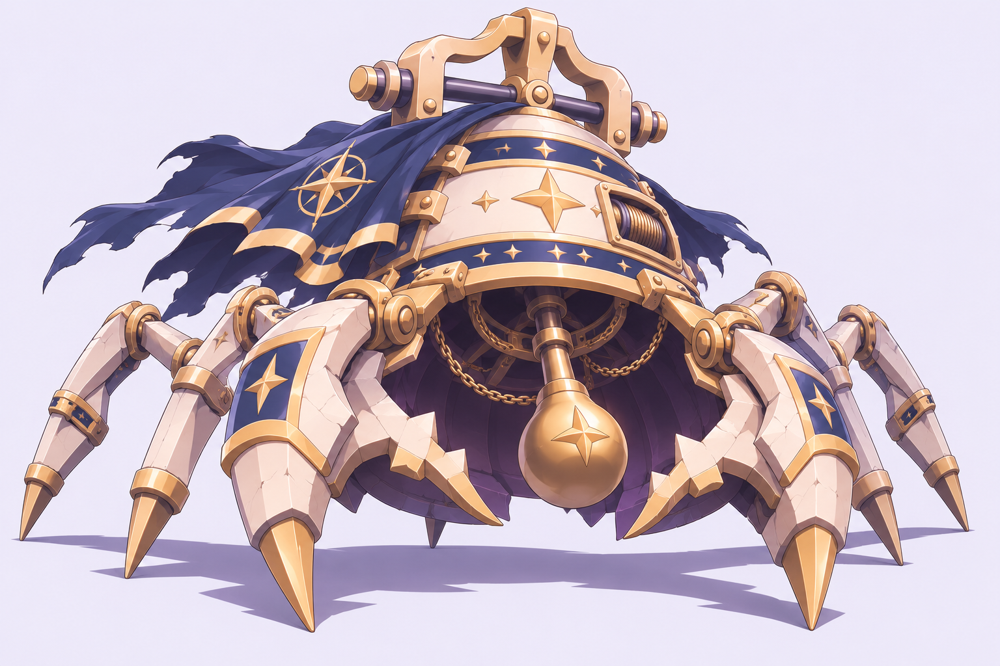
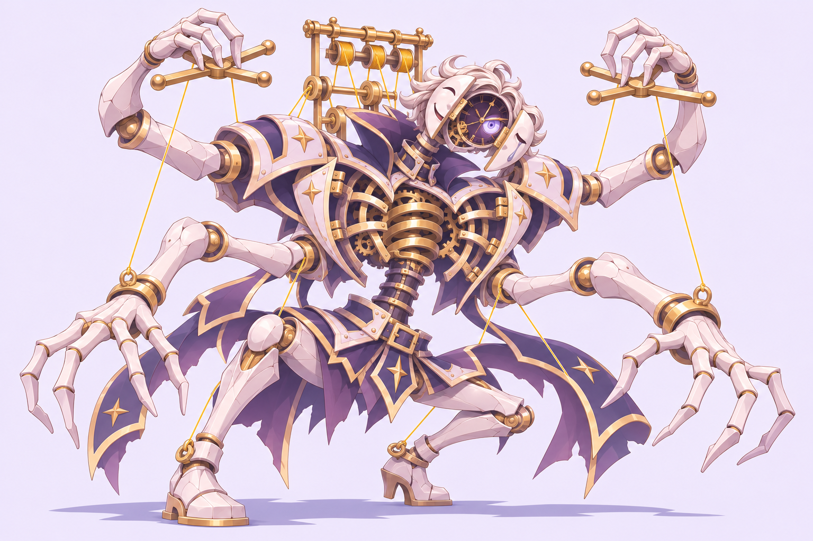

STAGE 02
플로라 기어 · 포식하는 온실지기
꽃 유리보존함·청록 모자·원예 가위를 유지하고, 네 다리와 거대한 포획 가위팔을 가진 태엽 포식형으로 변형.
ASTELLA / PART 1 / HARD METAMORPHOSIS
보스마다 고유한 상징을 이어받고 체형·무장·자세를 바꾼 검토 시안입니다.
STAGE 02
꽃 유리보존함·청록 모자·원예 가위를 유지하고, 네 다리와 거대한 포획 가위팔을 가진 태엽 포식형으로 변형.
STAGE 03
종·황금 종추·별 망토를 유지하고, 낮고 육중한 종체와 턱처럼 벌어지는 외피, 굵어진 여섯 다리로 변형.


STAGE 04
웃음·울음 가면과 조종 실을 유지하고, 넓은 태엽 흉곽·거대한 네 손·비틀린 춤 자세의 대형 인형으로 변형.

